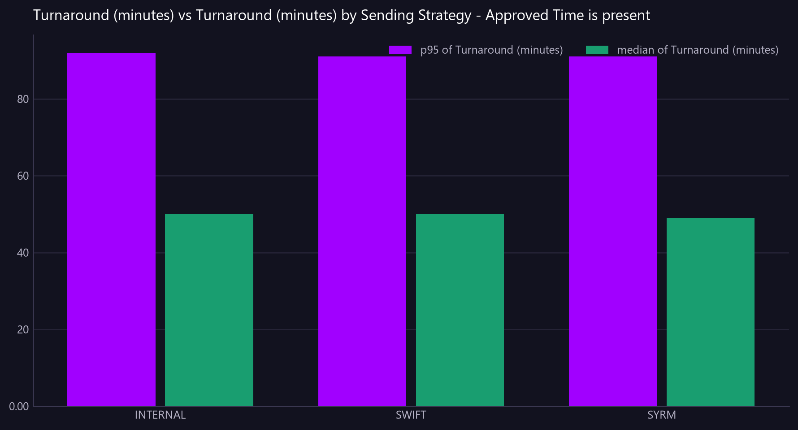

Turnaround (minutes) vs Turnaround (minutes) by Sending Strategy - Approved Time is present
Median and 95th percentile time from creation to approval. The queue view says what is waiting; this says how long waiting normally lasts.
Asked as How long does it take for transfers to go from created to approved? Show the median and 95th percentile turnaround by desk.

Commentary
The report provides the median and 95th percentile turnaround times for transfer approvals, categorized by desk. All desks show a similar median turnaround time, with INTERNAL and SWIFT both at 50.00 minutes, and SYRM slightly lower at 49.00 minutes. The 95th percentile turnaround times are also closely aligned, with INTERNAL at 92.00 minutes, and both SWIFT and SYRM at 91.00 minutes. The consistency across desks suggests a uniform process, but the operations team may want to ensure that the slight variations do not indicate underlying inefficiencies.
| Sending Strategy | median of Turnaround (minutes) | p95 of Turnaround (minutes) |
|---|---|---|
| INTERNAL | 50.00 | 92.00 |
| SWIFT | 50.00 | 91.00 |
| SYRM | 49.00 | 91.00 |
Limitations of this view
- The view is scoped to the value date range from 2026-07-20 to 2026-08-18.
- The turnaround time is calculated based on the timestamps available in the nostro transfer data.
- Data classification: Synthetic / non-production.
Downloads
{kind=link}
The Markdown documents everything considered, so a reader can hand it to an AI and ask follow-up questions about this view.
How this was produced
{
"view": "nostro_transfer",
"sheet": "Nostro Transfer View",
"source_file": "synthetic_liquidity_month.xlsx",
"mode": "aggregate",
"filters": [
{
"column": "Approved Time",
"operator": "not_null"
}
],
"group_by": [
"Sending Strategy"
],
"time_bucket": null,
"measures": [
"median of Turnaround (minutes)",
"p95 of Turnaround (minutes)"
],
"columns": [],
"sort_by": null,
"limit": null,
"join": null,
"derived": [
"Turnaround (minutes)"
],
"currency_corrections": [],
"data_as_of": "2026-08-19T01:21:56",
"measure": "Turnaround (minutes)",
"aggregation": "median",
"rows_in_view": 4781,
"rows_after_filters": 4574,
"rows_returned": 3,
"executed_at": "2026-08-20T11:29:39"
}